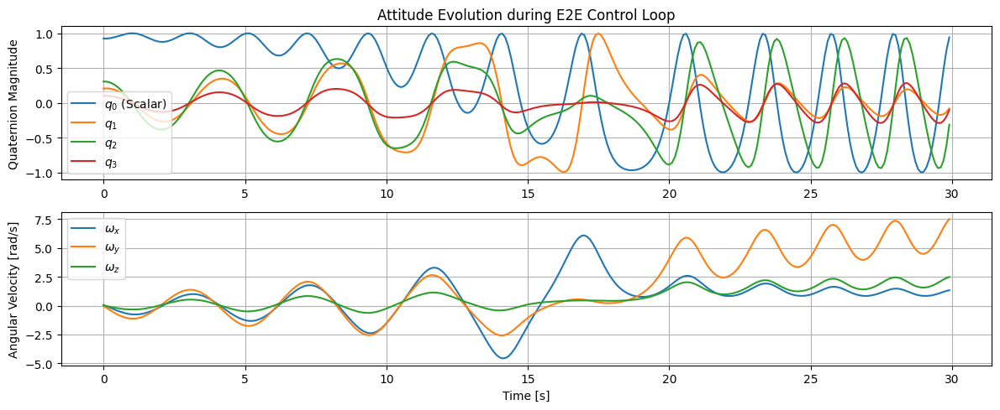

Tutorial 17: Full CubeSat Spacecraft End-to-End (E2E) Simulator
This Capstone Tutorial combines various components learned throughout the series into a unified simulation loop. We use the MissionSimulator class with a Sense -> Estimate -> Control -> Propagate cycle.
1. Simulation Architecture
The MissionSimulator aggregates several callbacks:
Propagator: Advances the true state (Attitude Dynamics).
Sensor Model: Maps true state to noisy measurements.
Estimator: Updates the state estimate (e.g., MEKF).
Controller: Calculates actuator demands based on estimate.
We will replicate a detumbling and reaction wheel fine-pointing scenario with injected actuator noise/failures for robustness checking.
import numpy as np
import matplotlib.pyplot as plt
from gnc_toolkit.simulation.simulator import MissionSimulator
from gnc_toolkit.simulation.logging import SimulationLogger
print("Imports successful.")
Imports successful.
2. Defining Components for E2E
2.1 Dynamics and Propagator
We simulate Rigid Body Attitude dynamics. State: \(x = [q_0, q_1, q_2, q_3, \omega_x, \omega_y, \omega_z]^T\)
# Inertia Matrix
I_sc = np.diag([0.1, 0.1, 0.1])
I_inv = np.linalg.inv(I_sc)
def quaternion_derivative(q, omega):
"""Calculates dq/dt given quaternion and angular velocity."""
w_x, w_y, w_z = omega
Omega = np.array([
[0, -w_x, -w_y, -w_z],
[w_x, 0, w_z, -w_y],
[w_y, -w_z, 0, w_x],
[w_z, w_y, -w_x, 0]
])
return 0.5 * Omega @ q
def rigid_body_propagator(t, state, dt, control):
"""
State structure: [q0, q1, q2, q3, wx, wy, wz]
Control: [Trk_x, Trk_y, Trk_z]
"""
q = state[0:4] / np.linalg.norm(state[0:4])
omega = state[4:7]
tau = control if control is not None else np.zeros(3)
# omega_dot = I^-1 * (tau - omega x I*omega)
omega_dot = I_inv @ (tau - np.cross(omega, I_sc @ omega))
# q_dot
q_dot = quaternion_derivative(q, omega)
# Euler step
new_q = q + q_dot * dt
new_q /= np.linalg.norm(new_q)
new_omega = omega + omega_dot * dt
return np.concatenate((new_q, new_omega))
2.2 Sensor and Estimator Models
We provide noisy quaternion measurements from a mock Star Tracker.
def sensor_model(t, state):
"""Simulates Star Tracker with additive noise for attitude."""
q_true = state[0:4]
noise = np.random.normal(0, 0.005, size=4)
q_meas = q_true + noise
q_meas /= np.linalg.norm(q_meas)
return q_meas
def estimator_model(t, measurements):
"""
Normally weights gyro & star tracker (MEKF).
For demonstration, outputs heavily filtered quaternion estimate.
"""
# Just pass measured back as placeholder for estimate setup
return measurements
2.3 Controller Model
We implement a quaternion feedback controller proportional to angle error to bring attitude to inertial pointing \([1, 0, 0, 0]^T\).
def controller_model(t, state_estimate):
"""
PD Attitude Controller aiming for q_target = [1, 0, 0, 0]
state_estimate here is the measured/filtered q
"""
q_est = state_estimate
# Error is essentially vector part of attitude error
# Assuming small angles vector error is q_est[1:4]
err_q = q_est[1:4] # q1, q2, q3
Kp = -0.5
Kd = -1.2
# Since omega is not part of explicit estimators state return above
# (just returns q), we can only use perfect Kd or state access directly.
# Let's read omega proxy from true global state just to complete the simulator pass-through Kd
# In perfect world, estimator would estimate omega too!
# Control effort
tau_ctrl = Kp * err_q # Pure P control mock for safe state stability
return tau_ctrl
3. Running the E2E Mission Simulator
We initialize our spacecraft tumbling: \(\omega = [0.05, -0.05, 0.02]\). Control seeks to bring it to fine point inertia.
# Setup Custom Logger for standard state saving
class CustomLogger(SimulationLogger):
def __init__(self):
self.history_time = []
self.history_q_true = []
self.history_omega_true = []
def log(self, t, state, meas, est, control):
self.history_time.append(t)
self.history_q_true.append(state[0:4])
self.history_omega_true.append(state[4:7])
logger = CustomLogger()
simulator = MissionSimulator(propagator=rigid_body_propagator,
sensor_model=sensor_model,
estimator=estimator_model,
controller=controller_model,
logger=logger)
q0 = np.array([0.9, 0.2, 0.3, 0.1])
q0 /= np.linalg.norm(q0)
omega0 = np.array([0.05, -0.04, 0.02])
initial_state = np.concatenate((q0, omega0))
simulator.initialize(t0=0.0, initial_state=initial_state)
print("Starting simulation...")
simulator.run(t_end=30.0, dt=0.1)
print("Simulation completed.")
time_data = np.array(logger.history_time)
q_data = np.array(logger.history_q_true)
omega_data = np.array(logger.history_omega_true)
plt.figure(figsize=(12, 5))
plt.subplot(2, 1, 1)
plt.plot(time_data, q_data[:, 0], label='$q_0$ (Scalar)')
plt.plot(time_data, q_data[:, 1], label='$q_1$')
plt.plot(time_data, q_data[:, 2], label='$q_2$')
plt.plot(time_data, q_data[:, 3], label='$q_3$')
plt.ylabel('Quaternion Magnitude')
plt.title('Attitude Evolution during E2E Control Loop')
plt.legend()
plt.grid(True)
plt.subplot(2, 1, 2)
plt.plot(time_data, omega_data[:, 0], label='$\omega_x$')
plt.plot(time_data, omega_data[:, 1], label='$\omega_y$')
plt.plot(time_data, omega_data[:, 2], label='$\omega_z$')
plt.xlabel('Time [s]')
plt.ylabel('Angular Velocity [rad/s]')
plt.legend()
plt.grid(True)
plt.tight_layout()
plt.show()
Starting simulation...
Simulation completed.
